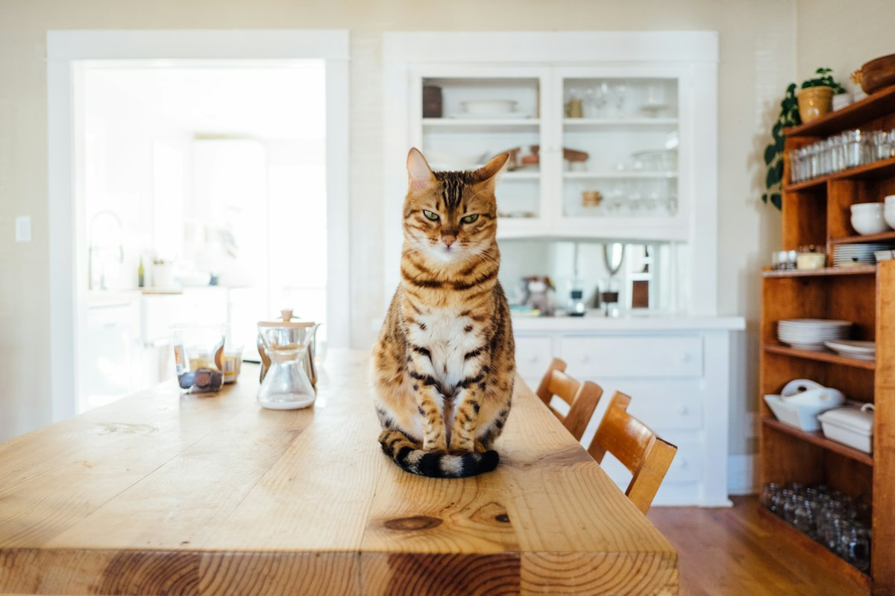

Six shelters. Every cat known by name.
Every shelter on CATÉ is visited by us before it's listed. They set their own fees and read every application themselves.

Near you · 2.4 mi
Podil Street Rescue
Started in a courtyard off Kostiantynivska in 2017, with one cat and a borrowed carrier.
Visit their page{{ summary }}